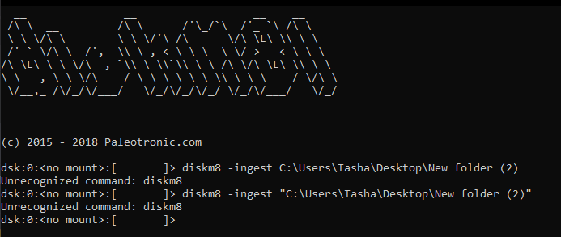
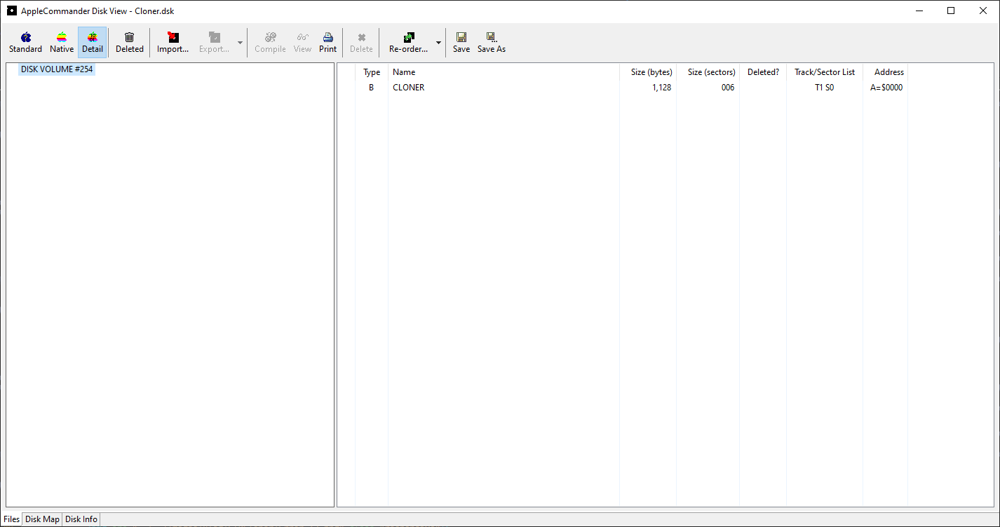

The rush to revive Elk Cloner
Since March was now dusted off I was proud I had at least done something for #MARCHintosh on the net, that is emulating the Twiggy Mac prototype and the Sony Test pre-release version of System 1 in Mini vMac (which I need to do a blog post on). This was my first time partaking in something like this and well, it was great, even if it was only one thing compared to others who had physical Macs they could use.
That was until April rolled over. I had not realised people had made a new event of sorts called "Appril2", which is supposed to sound like Apple 2. An online hashtag for the Apple ][?! What was I supposed to do? I knew what I was gonna do after thinking for a while, and that was trying out Elk Cloner, the program with a personality. I picked to do something different... which turned out to be lot harder to get working than I had expected.
So, what is Elk Cloner?
Elk Cloner was one of the first documented microcomputer viruses to spread "in the wild," which means it spread outside of the computer system or laboratory where it was created. Elk Cloner ran on the Apple II operating system and was distributed via floppy disk. Rich Skrenta, a programmer and entrepreneur, wrote it as a 15-year-old high school student in 1982 as a joke and put it on a game disk. Although having the same capabilities as a boot sector virus, it was built as a joke.
How it works? Elk Cloner was attached to a game that was then set to play. The virus was released the 50th time the game was launched, however instead of playing the game, it changed to a blank screen that displayed a poem explaining the virus. A copy of the virus was put in the computer's memory if it was booted from an infected floppy disk. When a clean disk was placed into the machine, the complete DOS (including Elk Cloner) was copied to the disk, allowing the virus to spread from disc to disk. Elk Cloner additionally added a signature byte to the disk's directory, indicating that it had previously been infected, to prevent the DOS from being constantly re-written each time the disk was accessed.
The first attempt: Not even knowing what I am doing
Getting Elk Cloner turned out to be more of a feat than I expected. Skrenta's website has the 6502 source code for Cloner 2.0 and an Apple II disk image of the Cloner source code. It takes a lot more than either grabbing that source code and compiling it in an online 6502 assembler or getting that floppy image and popping it into your Apple ][ to run it.
When I first started my first thought was to try and run the disk image as I presumed that had the stuff already so I tried this in the AppleWin emulator. What was I greeted with? This:

What you see right now is the contents of the disk image which has the source code as ".obj" and ".obk" along with the program itself. Trying to run it results in the Apple II telling me there is a file type mismatch and break in 30 which I presume is line 30 of the code:

This is when I reached out to the nerds of Mastodon for help. I was suggested to use a assembler thought was to go to an online assembler because you would think "oh, it's 6502 assembly code, I can just assemble this online". Nope, you can't. Why? You are going to run into errors about there being a syntax error on line 1 like this:

Not very nice, right? This is when I decided to head to Mastodon for help. The answer? Most likely assembler dialect issues. The source code for Elk Cloner is most likely in ORCA/M assembly which meant I could not assemble this in a ordinary online 6502 assembler so I was suggested to use the cross assembler Merlin 32, meaning I had to run this under Linux since I couldn't get it to work under Windows.
The second attempt: Assembling the source code the right way!
Since Merlin32 didn't seem to wanna run under Windows I had to get my trusty old late 2006 iMac running Linux Mint 21. It is a pain in the butt sometimes to use this machine as I often have to clear my desk to get to it.
Now with the iMac up and running it was time to assemble the source code, and get Merlin32 first.
When Merlin had finished downloading and I had installed it I set up a folder containing the source code in a ".s" file and ran the terminal from within that folder.

I thought that assembling it to get a binary that could be run was hard but it was as simple as typing in "merlin32 cloner.s" and pressing enter without any extra parameters. And it was done pretty quickly too despite my iMac being slow at times due to its age.


After it was done I got two files. A file that looks blank called cloner and one for file information. The blank file is the binary I needed so I transferred these to Windows.

Now with the binary in my hands it was time to get this onto a disk image... which was also hard. Turns out trying to get the binary onto a disk inage is a pain in the butt too. My usual program I use to put files onto disk inages did not work as it couldn't read the ".dsk" file type so once again I went to Mastodon for help. I was given a few suggestions, the first one being Diskm8.
As usual I can't read instructions because I am an idiot so I had no idea on how to use Diskm8 until after a few minutes.

I had to mount the disk I wanted to use then copy the files over using the CLI.

Now with the binary file on the disk using Diskm8, it was time to try it out.

I loaded up AppleWin once again, booted the master disk that came with the emulator and switched the master disk to the disk that now had the Elk Cloner binary on it. I double checked it had transferred using the catalog command and yes it did. That extra file was from a previous attempt as I had not cleared the disk, but this wasn't a big deal.

Trying to run it gave me error #13. I had no idea what this meant nor do I still know what it means. I presumed something had broken when transferring the binary using Diskm8 so I tried another suggested program called AppleCommander. This thing required Java so that was not fun.
I decided to create a whole new floppy disk image with the binary instead of using an existing blnak floppy which I had used prior. Thankfully AppleCommander has the option to create DOS 3.3 disk inmages which is what I needed.

I saved that disk image with the cloner binary and went back to AppleWin to try it out. Of course, I double checked that I had gotten it onto the disk with the catalog command and it was there.

However running it still gave me error 13. Now what? Turns out I had been running the binary the wrong way and had to use "BRUN" instead of just "RUN".
I didn't even know BRUN was a thing so I tried it out... and it crashed the machine.
Yep. It crashed the emulated Apple II by freezing it. I couldn't type anything.
After all this effort now what was I to do? I guess all I could do is wait for more help...
If you want to check out the compiled stuff, you can go here.